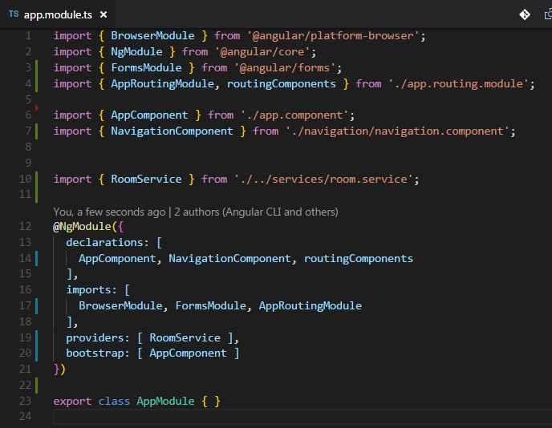

By now, you may have noticed that we've taken plenty of trips to our app.module.ts. I even made a sidenote in an earlier lesson that our module wasa getting pretty beefy. And that can be a problem.
Why can't I have everything inside app.module? Isn't it nice to have everything in one place?
Early on, yes, it's very convenient to have everything in one file to look at. But keep in mind the reserve project is barely off the ground and we can already see that app.module get a little heavier than we'd like. Any larger project that puts everything in one module will get massive. And things will go wrong.
Secondly, it makes it very difficult to read. Imagine what happens when this application gets more fleshed out. What if I want to check which components are being properly declared. How about if I check for a particular route that may not be working? What about organizing all my imports? This all becomes increasingly more difficult as we create larger and larger projects. If we keep things in several files categorized by feature, then we can only look at the files relevant to said feature when we have to debug. (And you will. Likely in this exercise.)
Finally, lets also make a point that we want to stick to the guideline of Object Oriented Programming. In a nutshell, this means creating our code in such a way that we can add stuff in small blocks and it will not affect the rest of our code. Conversely, we can take features, without breaking the rest of the code. What happens if everything is in one file and the one file is broken? Everything breaks, and it leaves your code very brittle.
So let's start by putting all of our route information in one file. Let's create a file called app.routing.module.ts. We want to throw all of our routing information in this file, so we can remove it from our app.module.
I would strongly recommend when doing an operation like this that you utilize the split screen functionality of your IDE and have both your new file and the file we are refactoring open side by side. (Both Atom and VS Code can do this).
You can Cut/Paste a lot here, or you can copy/paste and comment out what you dont need in the old file first, so you have something to go back to if something breaks. I will show what my app.routing.module looks like now and explain all the parts we moved.
As you might be able to tell, Ctrl-C, Ctrl-V was my friend. Let's go over each piece of this.
Wait, what? Don't all of our components go in a declarations array? Why are you tricking me?
It's no trick. Instead of putting our components in our declarations array, we are going to put them in an array that we will be exporting. Peep that last line:
export const routingComponents = [ WelcomeComponent, RoomComponent, AboutComponent, ErrorComponent ];
We create an array of components, and because we are exporting it, we can import that array in our app.module and throw that in our declarations.
Now this can still beg the question, why use the array at all? Remember that our app right now is relatively small, larger apps can reach 100 components. Imagine declaring 100 different components in that declarations array. That doesn't sound like fun. Instead, if we put ten of those in an array, now we can just have a bunch of array in our declarations, condensing our code and making it cleaner.
Lets take a look at all the thing we can now get rid of in our app.module, and a couple lines we added as well. I apologize for the smaller print, it was all I could do to fit everything in one picture.
First thing, wow look at all those things commented out! We don't need the RouterModule anymore, we also don't need our components affected by our router anymore (Note that NavigationComponent is still there), and we don't need our routing array. Cool!
But since we made that routing module, we do need to bring that module in. First we imported our app.routing.module and that array of our routed components in. Make sure you import these both in the same line, doing them seperately caused some tomfoolery in our class.
Now before I give the answer, think about the following, where in our decorator do we put our routing module, and our array of components. Got it yet? Remember, declarations contains components, so we just slapped our array in there. Now you can see how much easier this can get when we start filling an app up with components.
Our routing module now goes in the same spot all our modules go: imports. Two things to note: We do not need to bring in router module since we exported it earlier. Secondly, the order you put your modules in the imports array absolutely matters. We will get into that in the next lesson.
Double check and make sure the app is still working the same way it did before. Mine did with the above code, hopefully yours does to. There will be mistakes made, don't sweat them and try to figure it out. Common mistakes include routing things twice, moving components you didn't need to move, typos, etc. Once you've verified it works, delete the commented out lines in the app.module.ts. Let's see how it looks now.
Much better! And now you've successfully refactored your code and made your own routing module. But we're not done. Next lesson, we're going to refactor further and start creating child routes.